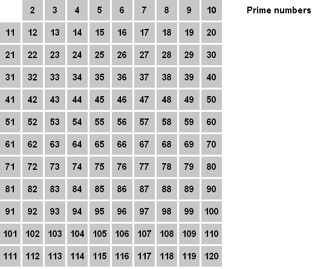

2. Sieve of Eratosthenes
Print all the prime numbers between 1 and 1024.
Method to find all the prime numbers less than or equal to a given integer n:
- Create a list of consecutive integers from two to n: (2, 3, 4, ..., n).
- Initially, let p equal 2, the first prime number.
- Strike from the list all multiples of p less than or equal to n. (2p, 3p, 4p, etc.).
- Find the first number remaining on the list after p (this number is the next prime); replace p with this number.
- Repeat steps 3 and 4 until p2 is greater than n.
- All the remaining numbers in the list are prime.

Now implement the algorithm using bit-twiddling instead of arrays. Do not use an array to store the "primeness" of a number. Use bits instead to store that infomation.